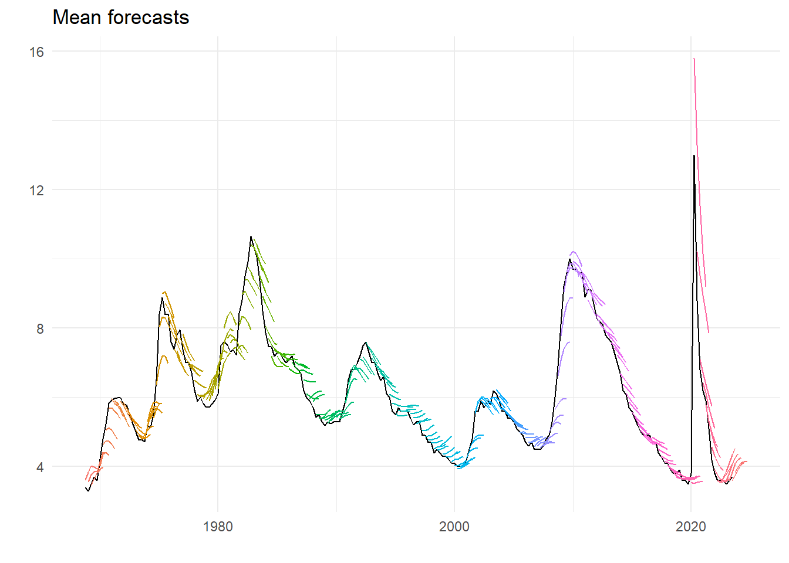
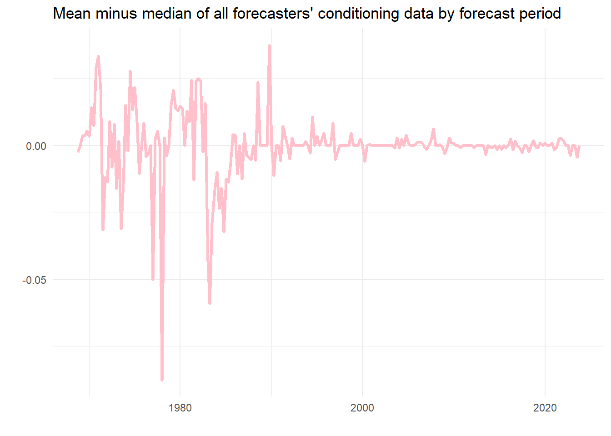
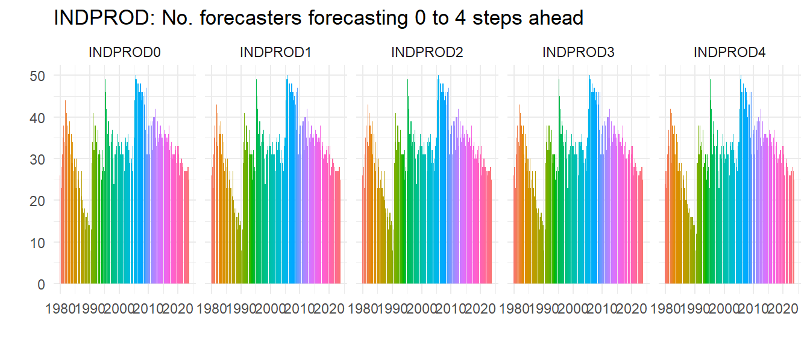
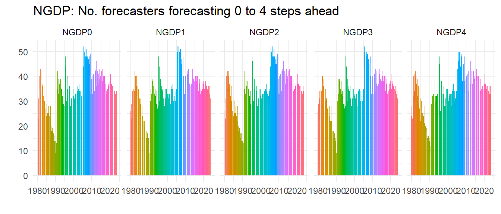
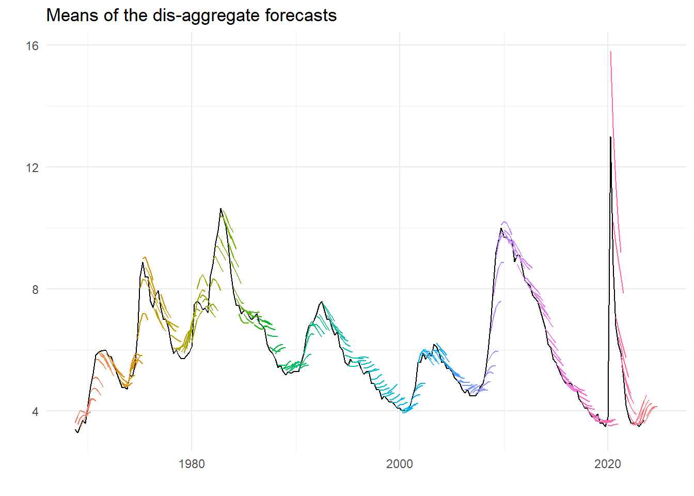
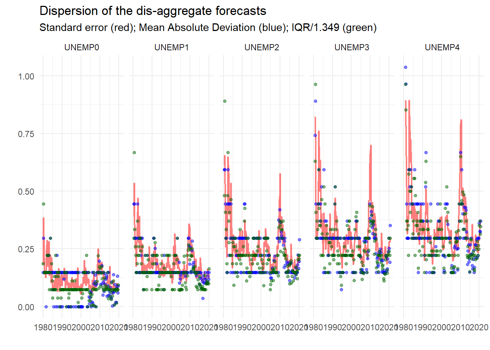
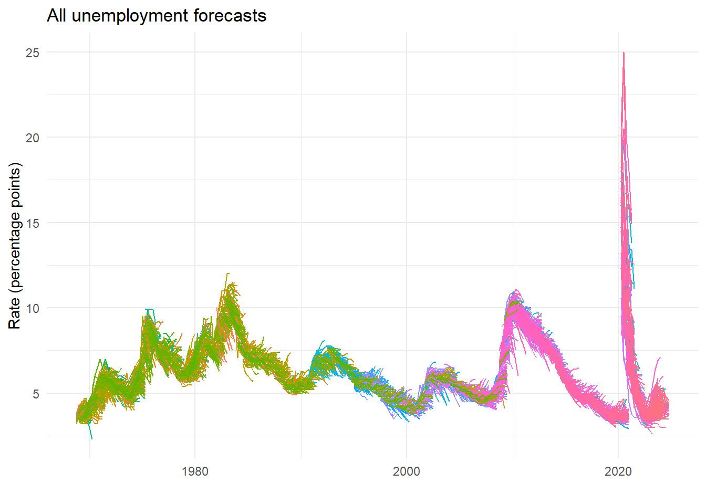
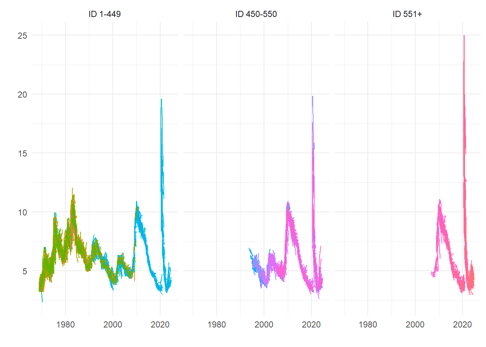
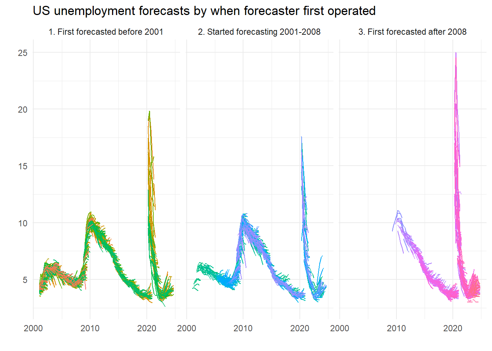
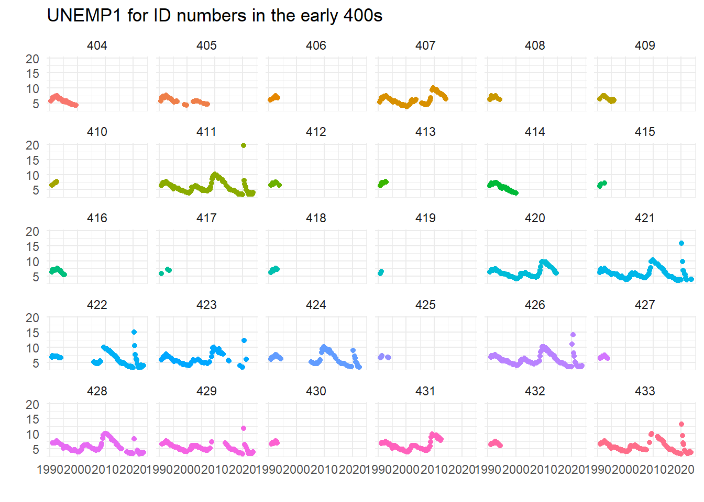

library(tidyverse)6 Plotting unemployment forecasts
6.1 Survey data is messy, people store it in strange ways
We’re going to look at survey data because it has some useful characteristics that we might want to explore. The data is obtained from Philadelphia Federal Reserve’s Survey of Professional Forecasters. Their website explains the data.
The SPF
On the landing page they explain how the survey began and continues:
’The Survey of Professional Forecasters is the oldest quarterly survey of macroeconomic forecasts in the United States. The survey began in 1968 and was conducted by the American Statistical Association and the National Bureau of Economic Research. The Federal Reserve Bank of Philadelphia took over the survey in 1990.
‘The Survey of Professional Forecasters’ web page offers the actual releases, documentation, mean and median forecasts of all the respondents as well as the individual responses from each economist. The individual responses are kept confidential by using identification numbers.’
From the Survey of Professional Forecasters
So we can look at the individual responses by ID number as well as the aggregate ones, and we will look at both. The data is stored in single files for different statistics and for different transforms. We will download the underlying, ID-level responses as well as the average (mean) level response, but there are also growth rates and so on.
6.2 Load packages
We load the packages we use a lot or would be fiddly to reference in the code. These are all in the tidyverse including the packages for date, lubridate, which we in particular will use to deal with dates including the quarter number as a number.
The following downloads the data:
u <- "https://www.philadelphiafed.org/-/media/frbp/assets/surveys-and-data/survey-of-professional-forecasters/historical-data/"
download.file(paste0(u,"meanlevel.xlsx"), destfile = "meanlevel.xlsx", mode = "wb")
download.file(paste0(u,"spfmicrodata.xlsx"), destfile = "spfmicrodata.xlsx", mode="wb")This is a ‘belt-and-braces’ approach, we download the data to a file rather than reading the contents to an object. This is partly because institutional firewall settings can cause difficulties for the latter that seem absent from the former. Note the option mode = "wb" is crucial for Excel files.
6.3 Levels plots
Now read in the levels data to UNEMP and create a date series. We need to do the latter as the dates in the files are stored as the year and the quarter as two separate variables. Also, we drop UNEMPA to UNEMPD which are annual variables we don’t want, retaining the variables called UNEMP1 to UNEMP6.
We create the date using yq from lubridate for a suitably concatenated and formatted input, using:
UNEMP <- readxl::read_excel("meanlevel.xlsx", na="#N/A", sheet="UNEMP") %>%
mutate(Date = yq(paste(YEAR, QUARTER))) %>%
select(Date, num_range("UNEMP", 1:6))
knitr::kable(head(UNEMP))| Date | UNEMP1 | UNEMP2 | UNEMP3 | UNEMP4 | UNEMP5 | UNEMP6 |
|---|---|---|---|---|---|---|
| 1968-10-01 | 3.5974 | 3.6218 | 3.8359 | 4.0231 | 3.9910 | 3.9397 |
| 1969-01-01 | 3.4000 | 3.5656 | 3.7738 | 3.8525 | 3.8623 | NA |
| 1969-04-01 | 3.3036 | 3.4607 | 3.6446 | 3.8196 | 3.9111 | NA |
| 1969-07-01 | 3.5036 | 3.6375 | 3.8214 | 3.9304 | 3.9875 | NA |
| 1969-10-01 | 3.7055 | 3.8382 | 4.1509 | 4.4127 | 4.4036 | 4.3473 |
| 1970-01-01 | 3.6034 | 4.0310 | 4.3586 | 4.4086 | 4.3345 | NA |
What are these variables?
Consulting Table 3 on page 22 of the documentation we find:
At each survey date, we record the projections for various horizons in the same row. UNEMP1 is the real-time quarterly historical value for the previous quarter—that is, the quarter before the quarter when we conducted the survey. UNEMP2 is the forecast (nowcast) for the current quarter—that is, the quarter when we conducted the survey. UNEMP3 to UNEMP6 are the forecasts for the following four quarters…
where we have replaced the actual variable name with UNEMP as Table 3 uses NGDP for illustration.
Now we need to organize this by including a date series for each forecast vintage. We rename the UNEMP variables consistent with their forecast horizon except for UNEMP1 which we rename UNRATE and time shift to get in the right period.1 We use the group_by(Date) to create a new variable FP that starts from each date and goes four periods into the future.
U2 <- UNEMP %>%
mutate(UNRATE=lead(UNEMP1,1)) %>%
select(Date, UNRATE, num_range("UNEMP", 2:6)) %>%
rename_with(~ paste0("UNEMP", 0:4), starts_with("UNEMP")) %>%
pivot_longer(cols = starts_with("UNE")) %>%
group_by(Date) %>%
mutate(FP = seq.Date(Date[1], by="quarter", length.out=5)) %>%
ungroup() The following plots of the mean forecasts with the early estimate of unemployment rate supplied:
ggplot(U2) +
geom_line(aes(x=Date, y=UNRATE), colour="black") +
geom_line(aes(x=FP, y=value, group=Date, colour=as.factor(Date))) +
theme_minimal() +
theme(legend.position = "none") +
labs(title="Mean forecasts", x="", y="")
There are clear characteristics – on the way up unemployment is on average under-predicted, one the way down over-predicted. This gets worse the further out the forecast horizon. And maybe this century forecasting has got better. Recent events unsurprisingly look like an huge outlier.
6.4 Underlying forecasts
We do the same for underlying data, at the ID level. Reading the data we get:
micro <- readxl::read_excel("spfmicrodata.xlsx", na="#N/A", sheet="UNEMP") %>%
mutate(Date = yq(paste(YEAR, QUARTER))) %>%
select(Date, ID, UNRATE=UNEMP1, num_range("UNEMP", 2:6)) %>%
rename_with(~ paste0("UNEMP", 0:4), starts_with("UNEMP"))
knitr::kable(head(micro))| Date | ID | UNRATE | UNEMP0 | UNEMP1 | UNEMP2 | UNEMP3 | UNEMP4 |
|---|---|---|---|---|---|---|---|
| 1968-10-01 | 1 | 3.6 | 3.7 | 4.0 | 4.0 | 3.7 | 3.7 |
| 1968-10-01 | 2 | 3.6 | 3.5 | 3.5 | 3.5 | 3.6 | 3.6 |
| 1968-10-01 | 3 | 3.6 | 3.7 | 3.9 | 4.2 | 4.2 | 4.1 |
| 1968-10-01 | 4 | 3.6 | 3.8 | 4.0 | 4.2 | 4.0 | 4.0 |
| 1968-10-01 | 5 | 3.6 | 3.6 | 3.7 | 3.9 | 3.7 | 3.7 |
| 1968-10-01 | 6 | 3.5 | 3.6 | 3.7 | 3.9 | 4.0 | 3.9 |
What is apparent from this is that the data is actually at the two-digit level, and that the historical unemployment rate used by the individual forecasters isn’t necessarily the same. So we can guess that the series UNRATE in the mean levels file is the average unemployment rates in the previous period observed by the forecaster. Turns out it is. (Have a look yourself.) We could look at the spread of these conditioning values, if we want, but here instead is the difference between the mean and the median value of the information.
micro %>%
group_by(Date) %>%
summarise(u = mean(UNRATE, na.rm=TRUE), v = median(UNRATE, na.rm=TRUE)) %>%
ggplot() +
geom_line(aes(x=Date, y=u-v), color = "pink", linewidth = 1.2) +
theme_minimal() +
labs(x="", y="", title="Mean minus median of all forecasters' conditioning data by forecast period")
As we can see, usually this is nearly nothing, although in one case the discrepancy is almost 0.1 percentage points. On average using the mean seems fine as a measure of the contemporaneous estimate of the latest unemployment rate, but perhaps there would be a case for using the median.
We can do a lot with this data. Let’s count and then plot how many forecasters there are for each period.
micro %>%
pivot_longer(cols = starts_with("UNEMP")) %>%
filter(!is.na(value)) %>%
group_by(Date, name) %>%
summarise(n = n()) %>%
filter(year(Date) > 1979) %>%
ggplot() +
geom_col(aes(x=Date, y=n, group=name, fill=as.factor(Date)), color=NA) +
theme_minimal() +
labs(title="UNEMP: No. forecasters forecasting 0 to 4 steps ahead", x="", y="") +
theme(legend.position="none") +
facet_wrap( ~ name, ncol=5)
So not everybody does all the steps ahead forecasts but most do, as all these graphs look about the same – look at the right hand graph where you can spot a few missing.
In the late 1980s the number of forecasters had really declined, but it picked up in the 1990s and hasn’t fallen since, although if anything recessions seem to increase the number of forecasters. Let’s do another check – is this pattern special to UNEMP? We plot the same for INDPROD and NGDP (we hide the code) and see whilst clearly not everybody forecasts all the variables the patterns of numbers of forecasters is very similar, implying for example that it wasn’t just that people stopped forecasting unemployment, they just stopped forecasting.


Unemployment is clearly not the most popular series to forecast, but as a UK resident I was surprised how relatively popular it was – UK forecasts of unemployment rates were rare before Mark Carney became governor of the Bank of England.2
Next, we do the same as before with vintages of forecast and dates, and we also create IDVin so we know the vintage of the forecast for each ID. All of this is put into a long data set to facilitate what we do next.
micro_long <- micro %>%
pivot_longer(cols = starts_with("UNE")) %>%
mutate(IDVin = paste0("ID",ID,"_Vin:",Date)) %>%
group_by(ID, Date) %>%
mutate(FP = seq.Date(Date[1], by="quarter", length.out=5)) %>%
ungroup() %>%
filter(!is.na(value)) 6.4.1 Aggregating the forecasts
Can we recreate the previous graph of the mean forecasts? Turns out we can and rather easily too. As we did to average the conditioning unemployment rates, we can use the summarise function to take the mean across the different IDs. We also redo the conditional rate too but for the long data set. The plot looks like the following:
av <- micro_long %>%
group_by(Date, FP, name) %>%
summarise(m = mean(value, na.rm=TRUE))
u <- micro_long %>%
group_by(Date) %>%
summarise(ur = mean(UNRATE, na.rm=TRUE)) %>%
mutate(ur = lead(ur, 1))
ggplot(av) +
geom_line(data = u, aes(x=Date, y=ur), colour="black") +
geom_line(aes(x=FP, y=m, group=Date, colour=as.factor(Date))) +
theme_minimal() +
theme(legend.position = "none") +
labs(title="Means of the dis-aggregate forecasts", x="", y="")
That looks pretty much like we had before.3 But we can also look at the dispersion, and obtain various measures in the same way as for the mean.
d <- micro_long %>%
group_by(Date, FP, name) %>%
summarise(v = var(value, na.rm=TRUE),
a = mad(value, na.rm=TRUE),
i = IQR(value, na.rm=TRUE))
d %>%
filter(year(Date) < 2020 & year(Date) > 1979) %>%
ggplot() +
geom_line(aes(x=FP, y=sqrt(v), group=name), color="red", alpha=.5, linewidth=.8) +
geom_point(aes(x=FP, y=a, group=name), color="blue", alpha=.5, size=1.2) +
geom_point(aes(x=FP, y=i/1.349, group=name), color="darkgreen", alpha=.5, size=1.2) +
theme_minimal() +
labs(title="Dispersion of the dis-aggregate forecasts", x="", y="",
subtitle="Standard error (red); Mean Absolute Deviation (blue); IQR/1.349 (green)") +
facet_wrap(~ name, ncol = 5)
So already, this looks useful. We can see that the dispersion measures – standard deviation, mean absolute deviation and inter-quartile range4 – conform to type, getting larger the longer the horizon, bigger at turning points etc.
6.4.2 Everything
What about plotting all the underlying forecasts?
ggplot(micro_long) +
geom_line(aes(x=FP, y=value, group=IDVin, colour=as.factor(ID))) +
theme_minimal() +
theme(legend.position = "none") +
labs(title="All unemployment forecasts", x="", y="Rate (percentage points)")
6.4.3 Sub groups of forecasters
Recent forecasts by forecasters with earlier (i.e. lower value) IDs could be the most experienced, but we are relying on the SPF classification. So here’s a rough split based on ID number, which shows some differences that we might ascribe to experience.
micro_long %>%
mutate(Split_ID = case_when(
ID < 450 ~ "ID 1-449",
ID > 550 ~ "ID 551+",
TRUE ~ "ID 450-550")) %>%
ggplot() +
geom_line(aes(x=FP, y=value, group=IDVin, colour=as.factor(ID))) +
theme_minimal() +
theme(legend.position = "none") +
facet_wrap(~ Split_ID) +
labs(x="",y="")
But we can be more accurate. We just work out when they did their first forecast and then set the groups accordingly. Here, we detect those that forecasted since the last millennium5, since the onset of the last recession, or in between. So are the new kids better – or worse?
micro_long %>%
group_by(ID) %>%
mutate(Earliest = min(Date)) %>%
ungroup() %>%
mutate(Recent = case_when(
year(Earliest) > 2008 ~ "3. First forecasted after 2008",
year(Earliest) < 2001 ~ "1. First forecasted before 2001",
TRUE ~ "2. Started forecasting 2001-2008")) %>%
filter(year(FP) > 2000) %>%
ggplot() +
geom_line(aes(x=FP, y=value, group=IDVin, colour=as.factor(ID))) +
facet_wrap(~Recent) +
theme_minimal() +
theme(legend.position = "none") +
labs(title="US unemployment forecasts by when forecaster first operated", x="", y="")
Worse, right? Kids today, don’t know they’re born. Maybe, maybe not…. Here’s a plot of some of the forecasts which reveal breaks:
ggplot(filter(micro, ID>=400 & ID < 434)) +
geom_point(aes(x=Date, y=UNEMP1, group=ID, color=as.factor(ID)), show.legend = FALSE) +
facet_wrap(~ ID) +
theme_minimal() +
labs(x="", y="", title="UNEMP1 for ID numbers in the early 400s")
This seems to imply that the caveats that some ID numbers may have been re-used when forecasters left the panel could be important – did 422 go on a prolonged holiday? Did 429 figure unemployment was too hard to forecast in the great financial crisis? Or were they (ironically) unemployed at that time?…
Leading the variable one period is the correct shift, although it seems the wrong way to me every time I think about it.↩︎
This was for a number of reasons, but forecasters were probably quite pleased not to be judged on their performance in a difficult case.↩︎
Actually if you look at all the numbers properly there is the odd discrepancy, but it is not possible to say if the source of the differences lies in the disaggregate data or the mean levels. There are lots of good reasons for small discrepancies.↩︎
We deflate this by 1.349 to convert it to an asymptotically valid (given normality) estimate of the standard error.↩︎
And yes, 2000 was in the last millennium.↩︎